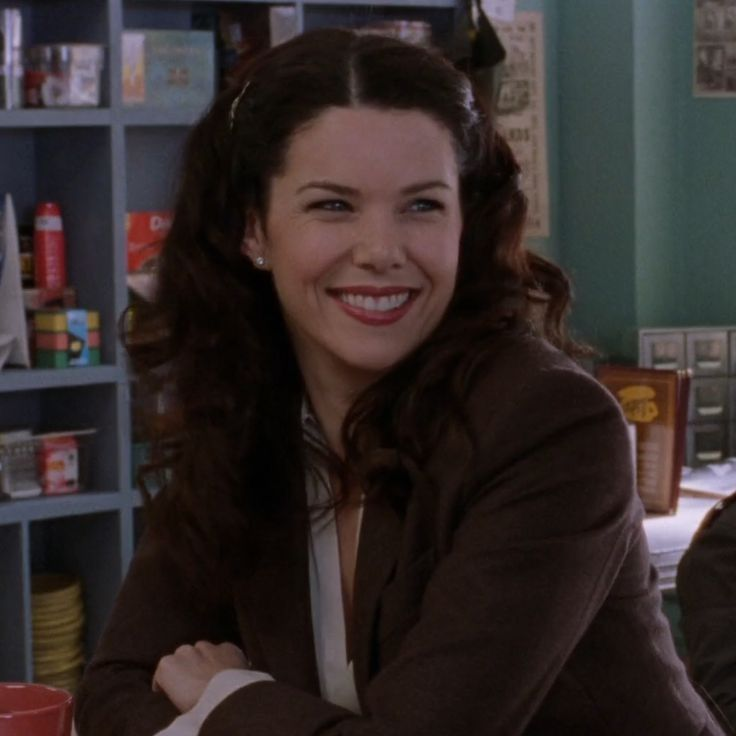
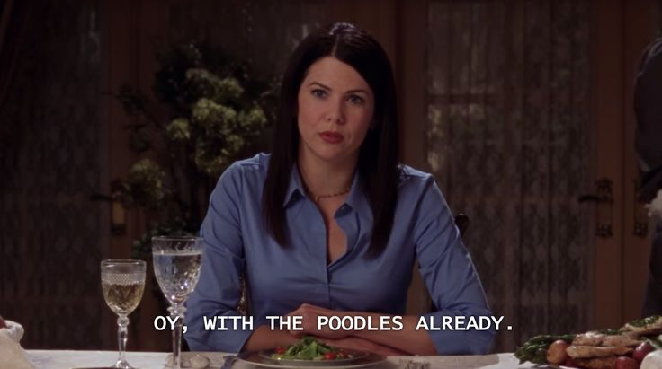
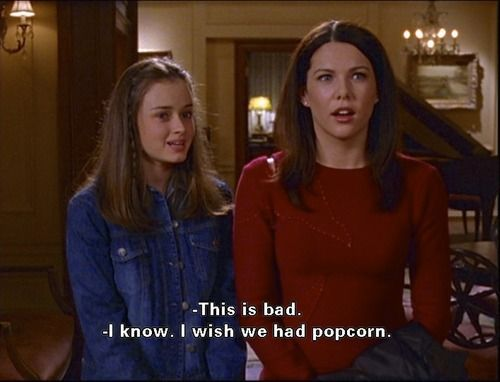
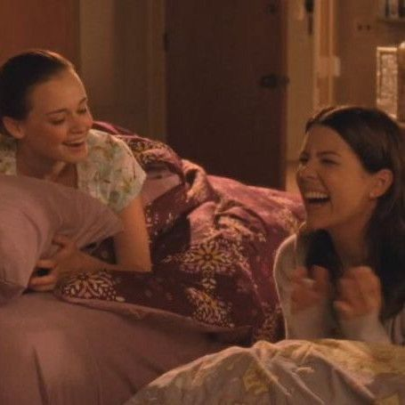
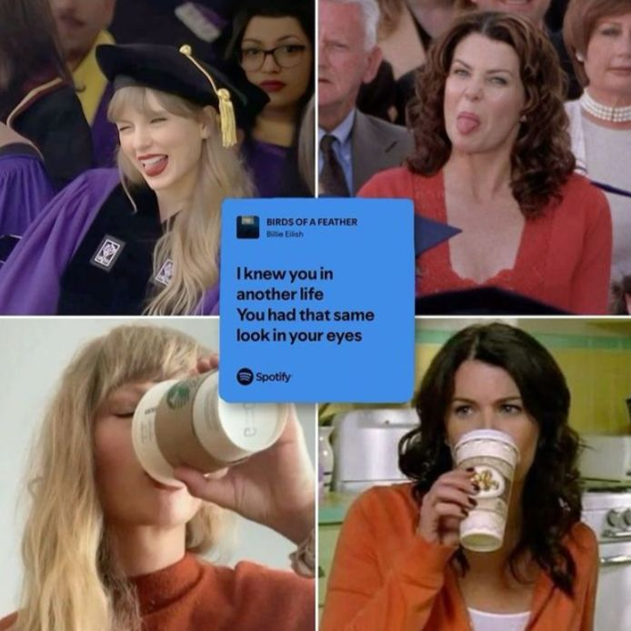
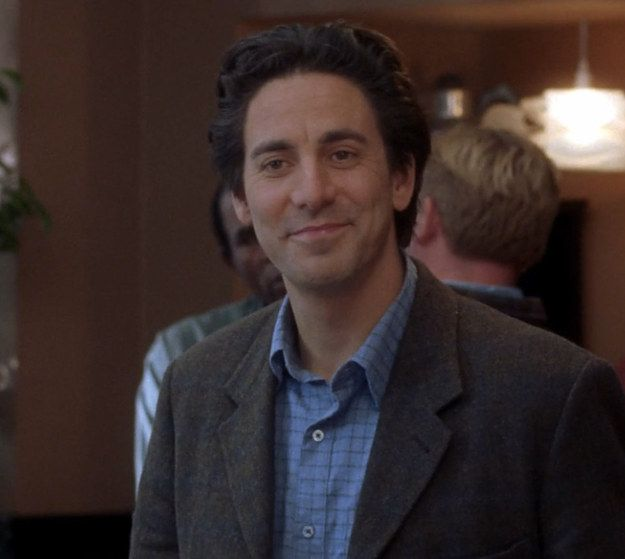

A personas como Lorelai las amas o las odias, y yo la amo
Creció en una familia de clase alta y con la presión de sus padres de hacer las cosas de manera correcta según los mandatos sociales, para ser una hija prodigio, a lo cual ella se reveló desde muy temprana edad, generando una disputa constante con sus padres, quedo embarazada a los 16 años y tuvo que lidiar no solo con los miedos de la maternidad si no tambien con el control que querian ejercer sobre ella y su vida. Y eso ella no lo podia tolerar, abandono a sus padres y toda esa vida para escapar y criar a su hija en un ambiente completamente distinto, se fue por su propia cuenta, consiguió trabajo y logró escalar en el, hasta finalmente ser la gerente y luego estudiar y tener su propia Inn con su amiga como socia.
Su historia es admirable, una mujer joven que lucha por tener una vida distinta para ella y su hija, no se ride y hace lo mejor que puede

La cantidad de lineas ICONICAS que tiene Lorelai no son coincidencia, es consecuencia de lo iconica que es su personalidad. Hay algo muy infantil en ella, que la hace ser graciosa y transcitar los momentos duros con humor. Es responsable, defiende sus valores, es leal, segundera, y está presente cuando los que más ama la necesitan ahi

Existen varios debates sobre la forma en la que crio a Rory, en si fue muy inmadura al comportarse como su mejor amiga y si deberia de tal vez haber puesto mas limites, se analiza que eso perjudicó en el futuro de Rory y en como se enfrenta ella a todo lo que se le presenta. Yo creo que si bien el debate no esta tan errado, la crianza que ella dió fue la mejor que pudo dar en las condinciones que se encontraba, y que los frutos que esta genero fueron super importantes, le enseño la importancia de compartir con otras personas, de disfrutar de la vida, vivir experiencias nuevas, serse honesta y seguir sus sueños

plus se parece a Taylor Swift

Ella dice en varias ocasiones que tiene mala suerte en el amor, primero con Christopher con quien nunca coinciden en un buen momento para estar juntos, y cuando finalmente lo hacen sucede algo que no se los permite. Ya adelantandome al final, y como la serie siempre lo plantea, el amor de su vida es Luke, la conexion que ellos tienen es especial y todos lo saben. Pero MI favorito (porque si, esta página la estoy haciendo yo para hablar de lo que a mi me gusta, es todo egocentrismo camuflado) es Max Medina

Max esta profundamente enamorado de Lorelai, y es un muy buen hombre, es respetuoso, romantico, le manda 1000 yellow daises para pedirle matrimonio, la espera, la entiende, la perdona, es estable, hermoso, inteligente, es todo lo que esta bien.
Para consultas sobre la página hablar con la creadora de la mismo, Milagros Peruzotti(enviar mail)(llamar)